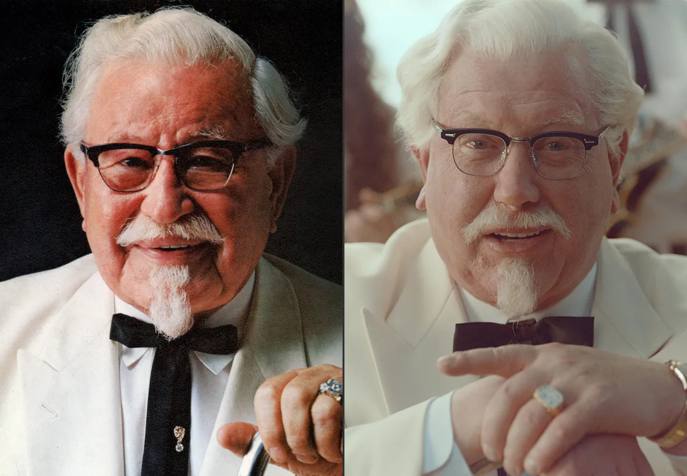
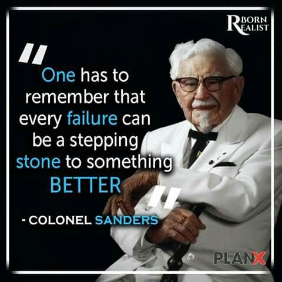
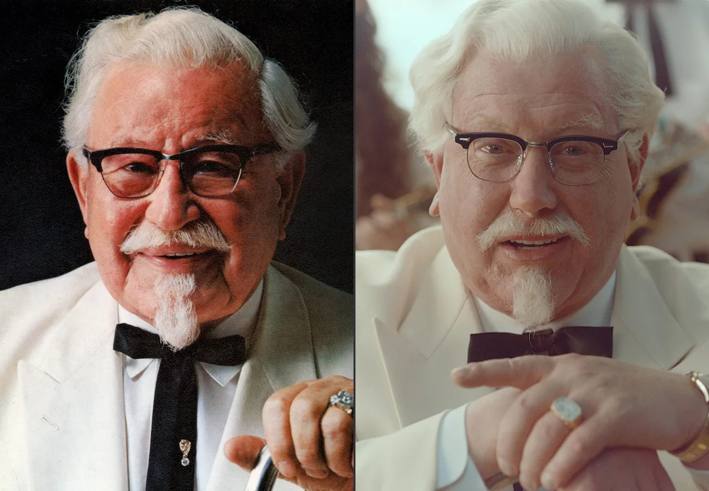
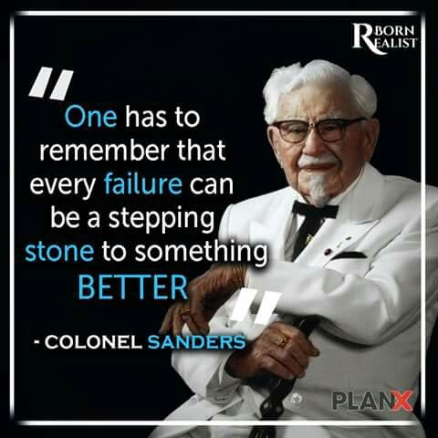

Colonel Harland Sanders
SEPTEMBER 9, 1890
 



BIOGRAPHY
Colonel Harland David Sanders (September 9, 1890 – December 16, 1980) was an American businessman,
best known for founding fast food chicken restaurant chain Kentucky Fried Chicken (also known as KFC) and later acting as the company's brand ambassador and symbol.
His name and image are still symbols of the company.
KFC was one of the first American fast-food chains to expand internationally, opening outlets in Canada, the United Kingdom, Mexico and Jamaica by the mid-1960s. Throughout the 1970s and 1980s, it experienced mixed fortunes domestically, as it went through a series of changes in corporate ownership with little or no experience in the restaurant business.